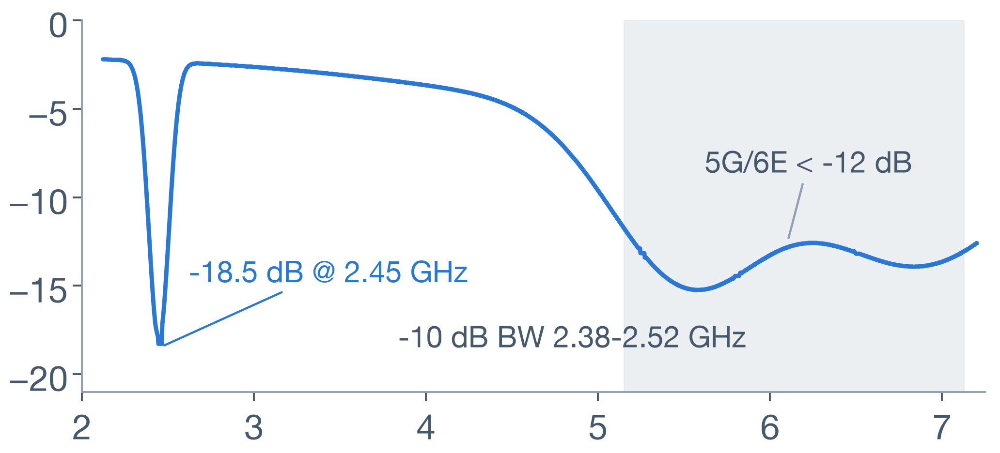
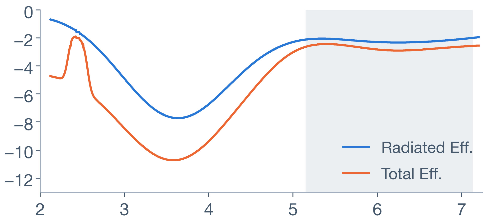

CONTENTS · 目录
报告目录
SECTION 01 · OVERVIEW
项目概述与技术架构
面向 TWS（真无线立体声）耳机内置天线，覆盖 2.4GHz 蓝牙 与 5GHz / 6GHz WiFi 6E 频段；以 Claude Code 为终端自动化核心，通过 PyAEDT Python API 驱动 Ansys AEDT 2025 (HFSS)，完成建模、求解、后处理与报告输出的全流程自动化。
终端自动化核心
Claude Code
自然语言指令 · 任务编排
→
Python API 驱动层
PyAEDT
脚本化建模与求解控制
→
三维电磁求解器
AEDT 2025 · HFSS
自适应网格 · 全波求解
→
结果自动输出
CSV · 工程报告
S11 · 效率 · 方向图
核心输出指标 KEY METRICS
S11 回波损耗
蓝牙 2400–2483.5 MHz
WiFi 5150–7125 MHz
WiFi 5150–7125 MHz
辐射效率 Radiated Eff.
天线辐射功率占比 (%)
总效率 Total Eff.
含阻抗失配损耗 (%)
3D 方向图 Pattern
增益与辐射方向分布
SECTION 02 · ENVIRONMENT
环境准备
系统与软件要求
✓Windows 10 / 11 · 64 位
建议内存 32GB 及以上，保障 6GHz 频段网格求解
✓Ansys AEDT 2025.1+（含 HFSS 许可）
需启用 HFSS 三维全波电磁求解模块
✓Python 3.10 / 3.11
与 AEDT 及 PyAEDT 版本匹配
✓Claude Code CLI
终端自动化入口，驱动 PyAEDT 脚本执行
$ pip install pyaedt pywin32 pandas matplotlib numpy $ python -c "import pyaedt" ✓ 验证通过后即可进入 SOP 第一步
pyaedtAEDT 官方 Python API，脚本化全流程pywin32Windows COM 进程通信组件pandas / matplotlib / numpy结果处理与绘图提示：若出现 COM Server Connection Error，需以管理员身份执行
ansysedt.exe -register 注册（详见 06 · 常见问题排查）。
SECTION 03 · SIMULATION SOP
仿真 SOP · 四步法
STEP 01 · CAD 模型清理 SOP 1/2 · CAD 处理与材料设置
01
模型修复与简化
使用 Discovery / SpaceClaim 处理导入模型
02
删除非辐射细节
螺丝、小额倒角、装饰件等不影响辐射性能的特征
03
对象分类管理
ABS+PC 外壳 / 锂电池 / PCB 参考地 / 金属天线弹片与 FPC
04
导出 STEP 中性格式
清理后的模型导出 STEP，供 HFSS 直接导入
目的：降低网格量、缩短求解时间，同时完整保留辐射主体特征。
STEP 02 · 材料参数设置
| 对象 | 材料 | Dk (εr) | Df (tanδ) |
|---|---|---|---|
| 耳机外壳 | ABS + PC | 2.8 | 0.005 |
| PCB 基板 | FR4 | 4.4 | 0.02 |
| 天线 / 弹片 | Copper / PEC | — | — |
- 初步仿真可将金属件设为 PEC（理想导体），加快迭代
- 最终验证改用 Copper（含趋肤损耗），结果更贴近实测
- 介质参数以供应商实测数据为准，避免引入系统偏差
STEP 03 · 端口与边界条件 SOP 2/2 · 端口、边界与求解设置
端口
50Ω 集总端口（Lumped Port）
置于天线馈点与 PCB 参考地之间，阻抗 50Ω
计算空间
空气盒 Air Box
包围整机，为辐射场提供计算空间
外边界
Radiation 辐射边界
空气盒外表面设为辐射边界，模拟开放自由空间
空气盒尺寸 ≥ λ/4 @ 2.4 GHz
λ/4 = 3×10⁸ / (4 × 2.4×10⁹) ≈ 31.25 mm
STEP 04 · 网格与求解设置
自适应中心频率6.0 GHz
自适应迭代次数MaxPasses 12–15
收敛判据MaxDeltaS < 0.02
扫频方式Interpolating 插值扫频
扫频范围2.0–7.2 GHz · 521 点
说明：以最高频段 6.0GHz 自适应求解，保证高频网格精度并覆盖低频。
SECTION 04 · SCRIPT
PyAEDT 自动化脚本
Part 1 · 建模 · 边界 · 端口 tws_antenna_sim.py
tws_antenna_sim.py — Part 1 / 2PYTHON · PYAEDT
from pyaedt import Hfss # 1. 初始化并连接 Ansys AEDT 2025 hfss = Hfss(specified_version="2025.1", solution_type="Terminal", new_desktop_session=True) # 2. 导入耳机 3D CAD 模型 (STEP) hfss.modeler.import_3d_cad( r"C:\models\TWS_Earphone_Model.step") # 3. 创建辐射边界 (Air Box) hfss.create_open_region(frequency="2.4GHz", boundary_type="Radiation") # 4. 创建 50Ω 集总端口 hfss.create_lumped_port_to_sheet( sheet_name="Port_Sheet", portname="Port1", impedance=50)
脚本通过 PyAEDT 以 Terminal 求解类型连接 AEDT 2025.1，依次完成 CAD 导入、辐射边界创建与 50Ω 集总端口设置。
Part 2 · 求解 · 扫频 · 导出 tws_antenna_sim.py
tws_antenna_sim.py — Part 2 / 2PYTHON · PYAEDT
# 5. 求解 Setup：中心 6.0GHz，自适应 12 次 setup = hfss.create_setup("TWS_Setup_6G") setup.props["Frequency"] = "6.0GHz" setup.props["MaximumPasses"] = 12 setup.props["MaxDeltaS"] = 0.02 # 6. 宽带扫频 2.0–7.2GHz，521 点 hfss.create_frequency_sweep( setupname="TWS_Setup_6G", sweepname="Wideband_Sweep", start_frequency="2.0GHz", stop_frequency="7.2GHz", num_of_freq_points=521, sweep_type="Interpolating") # 7. 求解并导出 S11 / 效率数据 hfss.analyze_setup("TWS_Setup_6G") s11 = hfss.post.get_solution_data( "dB(S(Port1,Port1))", "TWS_Setup_6G : Wideband_Sweep") s11.export_data_to_csv(r"C:\results\TWS_S11_Results.csv")
以 6.0GHz 自适应求解保证高频网格精度；Interpolating 扫频 2.0–7.2GHz 共 521 点覆盖全部目标频段；结果自动导出 CSV 供报告使用。
SECTION 04 · PARAMETRICS
天线长度扫参 · Optimetrics 参数化设计
tws_param_sweep.pyPYTHON · OPTIMETRICS
# 1. 定义设计变量：天线弹片长度（CAD 参数化） hfss["ant_len"] = "10.5mm" # 2. 扫参：8–12 mm，步长 0.5 mm（9 个设计点） sweep = hfss.parametrics.add( variable_name="ant_len", start_value="8mm", end_value="12mm", step="0.5mm", setupname="TWS_Setup_6G") # 3. 批量求解全部参数组合 hfss.analyze_setup(sweep.name) # 4. 逐长度提取 S11 峰值 → 选出最优长度 for L in ["8mm", "8.5mm", "9mm", "9.5mm", "10mm", "10.5mm", "11mm", "11.5mm", "12mm"]: s11 = hfss.post.get_solution_data( "dB(S(Port1,Port1))", "TWS_Setup_6G : Wideband_Sweep", variations={"ant_len": [L]})
| 天线长度 L (mm) | S11 峰值 (dB) | 谐振频点 (GHz) |
|---|---|---|
| 8.0 | −12.1 | 2.60 |
| 8.5 | −13.8 | 2.57 |
| 9.0 | −15.4 | 2.54 |
| 9.5 | −16.9 | 2.50 |
| 10.0 | −18.0 | 2.47 |
| 10.5 ★ | −18.5 | 2.45 |
| 11.0 | −17.8 | 2.42 |
| 11.5 | −16.3 | 2.39 |
| 12.0 | −14.6 | 2.37 |
最优 L = 10.5 mm → S11 −18.5 dB @ 2.45 GHz，谐振精确落在蓝牙频段中心；天线越长谐振频率越低，可按此规律二次微调。
SECTION 05 · RESULTS
仿真结果与评估
方案亮点与关键指标 HIGHLIGHTS
300%
迭代效率提升
单轮仿真周期：天级 → 小时级
−18.5dB
S11 峰值 @ 2.45GHz
阻抗匹配良好，回波损耗充足
2.38–2.52GHz
−10dB 带宽（2.4G）
完整覆盖蓝牙 2400–2483.5 MHz
< −12dB
5G / 6E 频段 S11
5.2 / 5.8 / 6.5 GHz 全部达标
频段覆盖与扫频范围2.0–7.2 GHz · Interpolating · 521 点
2
3
4
5
6
7 GHz
蓝牙 2.4G2.36–2.52 GHz
WiFi 5G5.15–5.85 GHz
WiFi 6E5.95–7.125 GHz · 5150–7125 MHz
效率矩阵与频段评估
| 频段 | 中心频点 | 辐射效率 | 总效率 | 评估 |
|---|---|---|---|---|
| 2.4G 蓝牙 | 2.45 GHz | 68.5% (−1.64 dB) | 62.1% (−2.07 dB) | 优秀 |
| WiFi 5G | 5.25 GHz | 61.2% (−2.13 dB) | 55.4% (−2.56 dB) | 达标 |
| WiFi 6E | 6.50 GHz | 58.0% (−2.36 dB) | 51.2% (−2.91 dB) | 达标 |
S11 关键结果
- 2.45 GHz 峰值 S11 = −18.5 dB，阻抗匹配良好
- −10 dB 带宽 2.38–2.52 GHz，覆盖蓝牙全频段
- 5.2 / 5.8 / 6.5 GHz 均 < −12 dB，5G / 6E 达标
各频段效率对比（%）
辐射效率总效率
2.4G 蓝牙 · 2.45GHz
WiFi 5G · 5.25GHz
WiFi 6E · 6.5GHz
✓ 结论：2.4G 辐射效率 > 60%，三频段总效率均 > 50%，满足量产指标（>50%），可进入整机联调阶段。
S11 回波损耗曲线（dB）

2.45 GHz 峰值
−18.5 dB
阻抗匹配良好
−10 dB 带宽
2.38–2.52 GHz
完整覆盖蓝牙频段
5G / 6E 频段
< −12 dB
5150–7125 MHz 达标
曲线依据报告关键数据（−18.5 dB @ 2.45 GHz、−10 dB 带宽 2.38–2.52 GHz、5G/6E < −12 dB）绘制，蓝色区域为目标工作频段。
天线效率曲线（dB）

2.45 GHz 辐射效率
−1.64 dB
≈ 68.5%，三频段最优
三频段总效率
> −3 dB
均 > 50%，满足量产指标
频段间凹陷
≈ −11 dB
非工作频段，属正常现象
总效率 = 辐射效率 × (1 − |Γ|²)，已含阻抗失配损耗；三频段效率值与结果页矩阵一致，蓝色区域为目标工作频段。
SECTION 06 · TROUBLESHOOTING
常见问题排查
Q1COM Server Connection Error
现象PyAEDT 启动 / 连接 AEDT 时报 COM Server Connection Error。
- 1以管理员身份打开 CMD（命令提示符）
- 2执行注册命令（见下方）
- 3注册完成后重启 Python / Claude Code 会话
SOLUTION
ansysedt.exe -gracesilent -register
以管理员身份运行一次即可
Q26GHz 附近网格收敛慢
现象6GHz 附近自适应网格迭代次数多、收敛慢，单次求解耗时显著增加。
- 1对天线弹片与馈电区域进行局部网格加密
- 2限制最大网格尺寸 max mesh ≤ 1.5mm
- 3收敛速度显著提升，高频精度不受影响
KEY PARAM
max mesh ≤ 1.5 mm
仅加密弹片与馈电区域
谢谢观看
Ansys AEDT 2025 (HFSS) × Claude Code (PyAEDT)
TWS 耳机 2.4G / 5G / 6E 多频段天线仿真 SOP 与工程报告
2.4G 蓝牙5G WiFi6E WiFi · 6GHz
2026 年 8 月